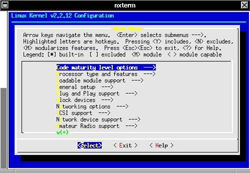
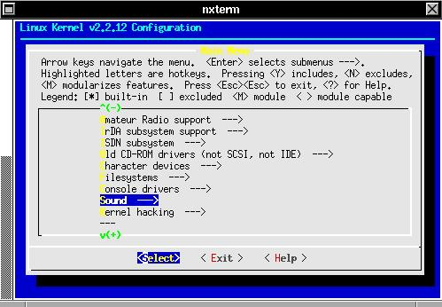
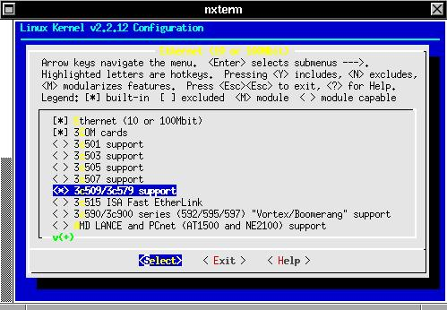
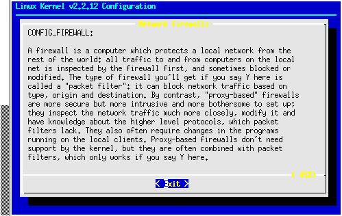
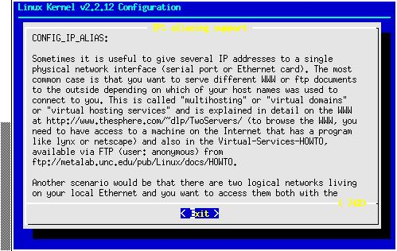

Lesson 7: Linux Kernel Compilation
This final lesson is designed to expose you to the world of the Linux kernel.This section will show you how to:
- download Linux kernel source
- manage multiple Linux kernel source trees
- patch linux kernel sources
- compiling the kernel
- configuring Lilo
This section is NOT a walk through, it will assist you in getting started. We recommend that the instructor saves some time to complete this final lesson and permit candidates to compile and test their own kernel.
Downloading Linux Kernel Sources
Obtaining Linux kernel sources is quite easy, you can obtain any Linux kernel source code from ftp.kernel.org or from a mirror site (see www.kernel.org).The Linux 2.2 and Linux 2.3 kernel source trees range from 10Mb to 14Mb compressed. We recommend that you download the latest kernel source (once), and simply download the smaller (~500k) kernel patches as they become available.
Kernel sources are number linux-x.y.z.tar.bz2 and linux-x.y.z.tar.bz2.sign. The sign is the PGP signed signature for the corresponding linux source archive. If you are hyper-security conscious you would check the .sign file with PGP against the archive before unpacking it, but most people trust kernel.org!
The x value in the version indicates the major version number, we are currently on Linux 2. The y value is the major release number, if its even it means that it is a stable Linux kernel, if its an odd number that simply means its an experimental kernel. The final number is the minor release number, and indicates what version it is. Linux 2.2 is currently at 2.2.12 while 2.3 is at 2.3.16.
Once Linux 2.2.13 comes out, instead of downloading another large archive, you can simply download patch-2.3.13.tar.bz2, and use the patch command. This is discussed later in the lesson.
Its good practice to download your linux source to /tmp, you can use the built in ftp command or ncftp command in Linux to download from ftp.kernel.org.
Managing multiple Linux kernel source trees
Linux kernel source is stored in /usr/src. Generally it's a good idea to have your last good kernel build, the latest kernel build and an experimental kernel build (to see what changes are upcoming) all on the same system.
Say for example we are currently using Linux 2.2.9 on our system, there should be a linux-2.2.9 directory in /usr/src with a symlink called linux linking to it. Simply delete the symlink linux (use rm linux). Then bunzip2 /tmp/linux-2.2.12.tar.bz2, then when that is completed tar xvf linux-2.2.12.tar. This will create a linux directory. Use mv to move it from linux to linux-2.2.12. Then use ln -s linux-2.2.12 linux to create the symlink.
If you have other Linux kernel sources, simply keep them in the appropriate /usr/src/linux-x.y.z directory, and when you need to use it simply change the symlink.
Patching the Linux kernel
Sometimes there are patches released for public testing, unofficial feature or driver patches or a critical security patch. These patches are generally announced on kernelnotes.org or freshmeat.net. Alan Cox, one of the primary kernel developers, like Linus Torvalds, is responsible for certain patches, and he makes his patches available to the world before they are integrated into the next minor release of the kernel. These are known as -ac patches, as Alan releases them as linux-x.y.z-acX. These patches or simply, the next release of the kernel can be patched into the kernel.
If you have linux-2.2.8 and you want to patch to linux-2.2.12, you need to obtain all the patches between 2.2.8 and 2.2.12, not just the 2.2.12 patch. Once you have these patches, you need to uncompress and place them in /usr/src.
Now if you wish to keep the old kernel source intact, simply delete the symlink linux, and copy the old kernel source. If we were upgrading from 2.2.8 to 2.2.12, then you would do something like :
cd /usr/src
rm linux
cp -a linux-2.2.8 linux-2.2.12
ln -s linux-2.2.12 linux
Now in your /usr/src directory you should have:
patch-2.2.9
patch-2.2.10
patch-2.2.11
patch-2.2.12
Simply use the patch command to add these to the linux source tree. You can do this by issuing these commands (from /usr/src) :
cd /usr/src
patch -p0 < patch-2.2.9
patch -p0 < patch-2.2.10
patch -p0 < patch-2.2.11
patch -p0 < patch-2.2.12
If you are using a patch from Alan Cox, you will need to create two other symlinks to the /usr/src/linux directory.
cd /usr/src
ln -s linux linux.ac
ln -s linux linux.vanilla
This should make most of Alan's patches work fine. If patch gives you an error, you either ran it from somewhere outside of /usr/src, or there are missing symlinks or there is a problem with the patch files path. You can edit the patch file with pico or vi to see if there are any path problems.
Compiling the kernel
Now that we have the latest and greatest linux source in our /usr/src/linux directory, it is now time to build the kernel. You have a few options. First of all, you should have installed the c libraries and c development libraries. If you did not do this during the Red Hat installation, use rpm to install them onto your system now. Change directory into /usr/src/linux.
You will be using the make command to build your new kernel. Use rpm to see if make is installed, and install it if necessary. There are three methods to building the linux kernel, (a) command line, (b) text based menus or(c) X-Windows, We recommend you use option b. Option A doesn't provide a means to go back on options you may have selected earlier, unless you know what you are doing its generally quicker to use method b. Method c requires you have X-Windows installed and the correct display variable. If you think you have X-Windows installed correctly feel free to use this method.
Type: make menuconfig For Text based Menus
make config For command line compilation
make xconfig For X-Windows interface
Once you type make menuconfig you will see some source code being compiled, hopefully you have ncurses installed, and you should see a menu. If you get an error check with your instructor!!

Figure 3.0: Linux Kernel Configuration
If you have the correct libraries installed you will be presented with a screen similar to that in Figure 3.0. Since this is probably the first time you have tried to compile a Linux kernel, you should go through each option, reading the help carefully and familiarize yourself with the kernel source. Most kernel options will advise you on whether or not additional options are required, you should probably only enable one or two advanced options the first time around. You will need to know what type of hardware you have in your system. Make sure you add support for your process, ethernet card and IDE or SCSI interfaces.
If you want some of the advanced network options you should choose in the Code Maturity level options to enable experimental or new code. You should also enabled loadable module support.

Figure 3.1: Further kernel options
To briefly example each section:
Section Description
Code Maturity Level options Experimental Code enable/disable
Processor type Select chip family and enable features
Loadable Module Support Drivers can be loaded as modules (not in kernel)
General Setup IDE and standard system configuration
Plug and Play Enable Plug and Play
Block Devices Hard Drives and other storage devices
Networking options Firewalling, Aliasing and other features
SCSI Support Enable SCSI device support
Network Device Support Network drivers and network device support
Amateur Radio Support Radio Modem and HAM radio device support
IrDA subsystem Infra Red Device Support
ISDN subsystem ISDN Terminal adapter support
Old CD-ROM drivers Old NON-IDE/SCSI CD-Rom support
Character Devices Device Support for non-block devices
Filesystem Partition and Network File system support
Console Drivers Support for video and text consoles
Sound Sound support and Open Sound System
Kernel Hacking Enable advanced debugging options
You should explore each option and use the help to learn what each option does. You can use space to add the feature to the kernel [*] or [M] as a module.

Figure 3.2: Network Device Support
In figure 3.2 you can see an example of the how enabling one kernel option provides you access to other additional sub-options. In this case we enabled Ethernet (10/100), then 3Com cards, which gave us access to a list of supported 3Com cards. We selected to compile support for our 3c509 directly into the kernel (hence the *).

Figure 3.3: Help Example
If you highlight an option and select HELP you will see another box similar to the one in Figure 3.3. This is the help option for IP Firewalling. As you can see the help options are well documented.

Figure 3.4: IP Aliasing
This is the help screen for IP aliasing, like IP firewalling, this feature is something you should add to the kernel. IP aliasing allows you to specify more than one IP address per network card. This allows for devices such as eth0:0 or eth0:1 to enable support for multiple ips. You can use ifconfig to add interfaces with this compiled in.
Once you have completed your selections, you should choose EXIT and then YES to saving your kernel options. Once saved you need to issue some more make commands:
make dep ; make bzImage ; make bzlilo
The first command (dep) compiles all the dependencies, the second command builds a bzip compressed Linux kernel image, and bzlilo adds the kernel to lilo.
Once this is completed, successfully, you will also need to make modules, if you used them. To do this use:
make modules ; make modules_install
This makes the modules and installs them into /lib/modules/linux-x.y.z
Configuring Lilo
One problem with Red Hat is that it installs the kernels in /boot, but make bzlilo puts the files in the root directory. To get around this we will need to fix some links in /boot.
Similar to the methods we used to manage the /usr/src directory, you will need to do something similar with /boot. First of all, delete the System.map and vmlinuz in /boot. This are just symlinks. Next you will need to move the System.map and vmlinuz out of /.
mv /vmlinuz /boot/vmlinuz.2.2.12
mv /System.map /boot/System.map.2.2.12
Now link your /boot/vmlinuz and /boot/System.map to the 2.2.12 files.
Next use pico or vi to edit /etc/lilo.conf
Your file will look something like:
boot=/dev/hda
map=/boot/map
install=/boot/boot.b
prompt
timeout=50
image=/boot/vmlinuz-2.2.5-15
label=linux
root=/dev/hda3
read-only
other=/dev/hda1
label=win
table=/dev/hda
In the file on the previous page, you can see that lilo's primary boot device is the first IDE drive. It will prompt for which image to load, and will autoboot after 50 seconds. The first linux image is called linux, boots from /dev/hda3 (third partition on the first ide drive).
To add support for our new kernel, we will add a new entry. There are two main reasons for this, first of all, if the kernel doesn't work, you still can boot into Linux with the old kernel. Secondly, if you forgot to add support for an essential feature you can quickly reboot into the old image again.
The section we will add should sit between the read-only line and the other (windows partition) entry. We will add the following:
image=/boot/vmlinux.2.2.12
label=newlinux
root=/dev/hda3
read-only
Once this is added to the file, save it and run lilo. You should get something like:
Added * linux
Added newlinux
Added win
This means that linux is the default. Now, reboot and at the LILO prompt type new linux. If you want to put a message before the LILO prompt you can added the line message=/etc/lilo.msg to the top of the lilo.conf file. Create you lilo.msg as a text file with your message, and the run lilo. Use dmesg after booting to see if your new kernel worked correctly or if any problems exist.
Loading Modules
If you opted to use modules for some advanced features you wanted to experiment with, you will need to learn to use three commands:
lsmod Lists active loaded modules
insmod Loads a module
rmmod Removes a module
To install ip_masq_ftp.o which is a module to enable FTP file transfers using IP masquerading, you would use:
insmod /lib/modules/linux.x.y.z/ipv4/ip_masq_ftp.o
And then use lsmod to see if the module was loaded correctly.
Appendix A: Further Help and Information
You should now have a good grasp of some of the key features in Linux. You should practice and experiment with the lessons in this manual on your own system in your own time. If you installed the EXTRA Documention during your Linux installation, you will have a valuable resource in /usr/doc/HOWTO. Here there is plenty of information on how to setup a multitude of services in Linux. You should thoroughly read this information before seeking additional help.
The internet is your key tool to obtaining assistance on Linux related problems. There are some key web sites that will keep you up-to-date in the Linux world.
Site Content
www.freshmeat.net Updates and new linux applications
www.slashdot.org News in the Linux world
www.linux.com Tuning, news and additional help
www.rootshell.com Security Information
www.securityfocus.org Security Alerts
www.kernelnotes.org Kernel Information
www.kernel.org Official Kernel Announcements
www.deja.com Search UseNet/Newsgroups
www.gnome.org Linux Desktop Environment
www.kde.org Alternative Desktop Environment
www.themes.org Linux X Themes
www.windowmaker.org Popular WindowManager for X windows
www.xfree.org Free X Server site
www.apache.org Free Web Server site
www.squid-cache.org Free proxy server
www.linux-router.org Linux router project
If you are looking for a human response you can try irc.openprojects.net that has several Linux support channels.